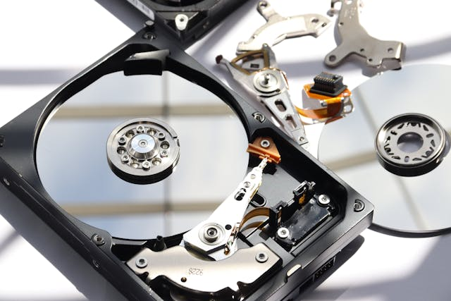

PC Components
Computers are made from a lot of different components, but never fear! Whether you plan to buy a PC or build one, knowing the names of each part, and what it does, will help you as you jump into your PC gaming journey.
Here is the short list:
The detailed list
Computer Case
Computer cases, or towers, are where all your components are organized. Some are open air, referred to as test benches, to make it easy to swap out parts for testing. Some have glass, or plastic, windows on the side and/or front to easily display your components and RGB lighting while others don't. Some are massive and others are small. No matter what your style preference is, you'll be able to find exactly what you're looking for.
Motherboard
The backbone of every computer. This serves to connect and allow communication between all the various components, such as your CPU, RAM, and storage devices. Motherboards come in a variety of form factors from small micro-ATX sizes for mini pcs to ATX sizes for medium and large size pcs. Each motherboard supports either an AMD or Intel chip set and a specific type of ram, such as DDR5. These specs will be listed and you can find detailed lists of compatible components from the manufacturers website.
CPU
The Central Processing Unit, also known as a central processor, main processor, processor, or CPU, serves as the brains of the computer. It executes instructions of a computer program. The two main brands for desktop and laptop computers are Intel and AMD. Every pc builder will argue which one is better and the truth is neither opinion is wrong. Each manufaturer does somethings better than the other, depending on the year, and they generally both work great.
CPU Cooler
Most processes will cause your CPU to heat up fairly quickly, so you'll need A CPU cooler. These coolers do just what it sounds like: it keeps the CPU at consistant cool temperature and prevents it from overheating. Once the CPU reaches a certain temperature the computer will automatically shut off as a saftey precaution. The temperature at which this happens varies between different chips and BIOS settings. Some CPUs come with a stock cooling fan, which can be a bit of a hit and miss. There are a multitude of cooling fans and liquid cooling options to choose from. Which of these two types you pick largely comes down to preference.
RAM
Random Access Memory, or RAM, acts as a temporary storage that your computer gives to applications to store and access various types of data. Though similar to storage devices, Rams is much faster and can read and write this data almost instantaneously. This allows your applications to run far more efficient than if it had to write the same data to a storage device. Generally speaking, the more RAM you have, the more data can be accessed. However, there are multiple types of RAM, but, for the most part, DDR is the type you'll need.
Power Supply
Just as it implies, the power supply provides power to the motherboard and various components. There are a variety of options to choose from, including modular options, and your choice will largely depend on the amount of power your pc requires.
Storage
Your storage device is where you store all your data, from those embarassing family photos to your operating system files. The two main types of storage you will use in a computer are hard drives (HDDs) and solid state drives (SSDs). HDDs use metal disks to store large amounts of data but are typically slower due to the many moving parts involved. SSDs use memory chips to store data and are much faster. However, SSDs are a fairly newer technology, so you wont get as much space for your buck. Because of this, it is common to buy a 1 or 2 TB SSD for installing the operating system and programs you want to load fast while buying a much larger HDD for additional storage.
Case Fans
Case Fans are similar to the CPU cooler, but with a much more basic purpose: to disperse the heat generated from all internal components to the outside. Every computer case will have areas for ventilation that these fans can connect to and some cases will come with any number of fans. They come in a variety of sizes and colors and can be purchased with or without RGB lighting.
GPU
The Graphics Processing Unit, more commonly called the graphics card or GPU, is an additional component for 3D modeling, gaming, video processing, and even machine learning. GPUs also have their own ram so as not to bog down the system memory. Most motherboards come with a basic integrated GPU which are capable of handling your general internet browsing and some light gaming. However, you'll need to purchase a dedicated graphics card if you're wanting to do any modern gaming.
Expansion Cards
There a variety of expansion cards available which add a variety of different functionalities to a computers. For example, the GPU previously mentioned, wifi, sound, storage, card readers, and additional USB ports to name a few. Whatever your personal needs are, you should be able to find an accesory for it. These will typically plug into the PCI slots on a motherboard, though some may require a specific slot type.